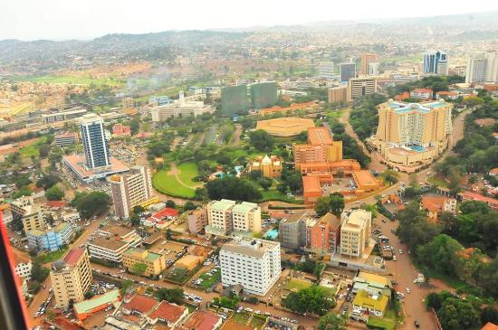

Uganda Tourism

“The Pearl of Africa” is synonymous with Uganda.
Winston Churchill dubbed Uganda “The Pearl of Africa” in 1907 while just a young Member of Parliament, saying:
“The kingdom of Uganda is a fairy-tale. You climb up … and at the end there is a wonderful new world. The scenery is different, the vegetation is different, the climate is different, and, most of all, the people are different from anything elsewhere to be seen in the whole range of Africa … I say: ‘Concentrate on Uganda’. For magnificence, for variety of form and colour, for profusion of brilliant life – bird, insect, reptile, beast – for vast scale — Uganda is truly the pearl of Africa.”
Uganda is endowed with plentiful natural resources, a vast diversity of wildlife and a varied geography. Situated on the equator where the West African Jungle meets the East African Savannah in the African Great Lakes region with several major lakes including a large portion of Lake Victoria, it has a tropical climate with plentiful rainfall and fertile land. The snow-capped Rwenzori Mountains in the southeast are considered by some to be the source of the Nile.
There are 60 protected areas, including 10 national parks, where you can observe 330 species of mammals and over 1000 species of birds including many of the popular animals we associate with Africa including Lions, Elephants, Rhinoceros, Hippopotamus, Giraffes, Gorillas and Chimpanzees.
Agriculture and fishing play a major role in the livelihood of the people, with export crops including coffee, cotton and tobacco. Among Uganda’s natural resources there are significant mineral deposits as well as mostly untapped reserves of crude oil.
About the size of the state of Oregon, Uganda has a population of 35 million. The Capitol City of Kampala (pop. 2.5 million) and Entebbe (pop. 80,000), with its international airport, as well as most of the larger cities, are located in the southern Lake Shore region of Lake Victoria. There are 10 major indigenous ethnic groups speaking 40 languages. The official language is English. 85% of the people are Christian, largely Catholic and Anglican.
This introduction was obtained from PearlOfAfrica.tv